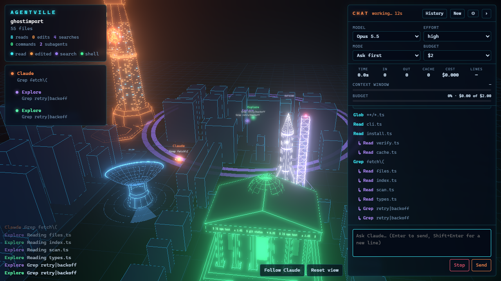
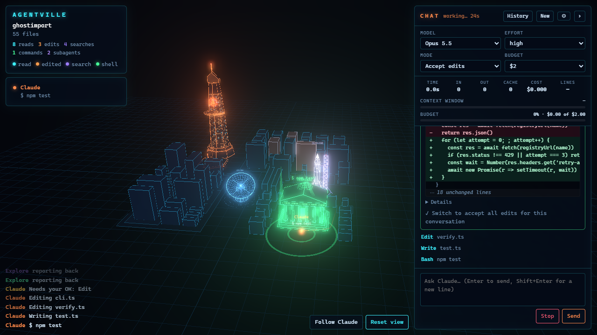
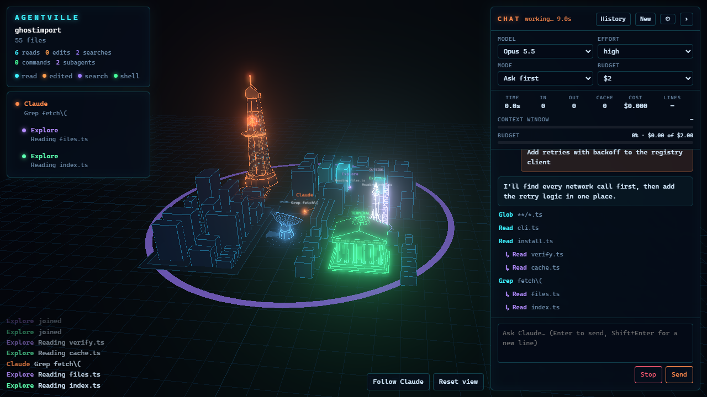
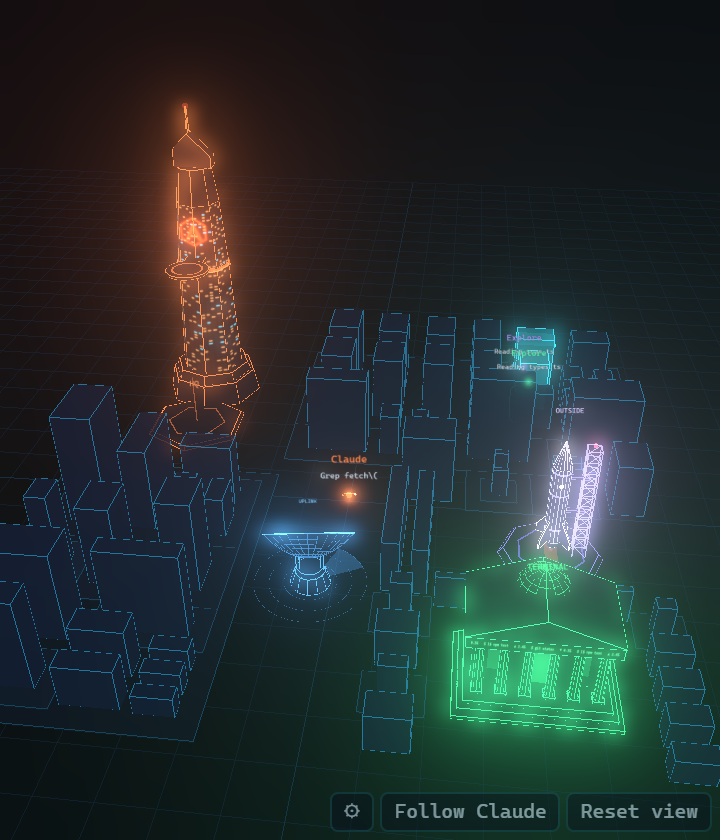
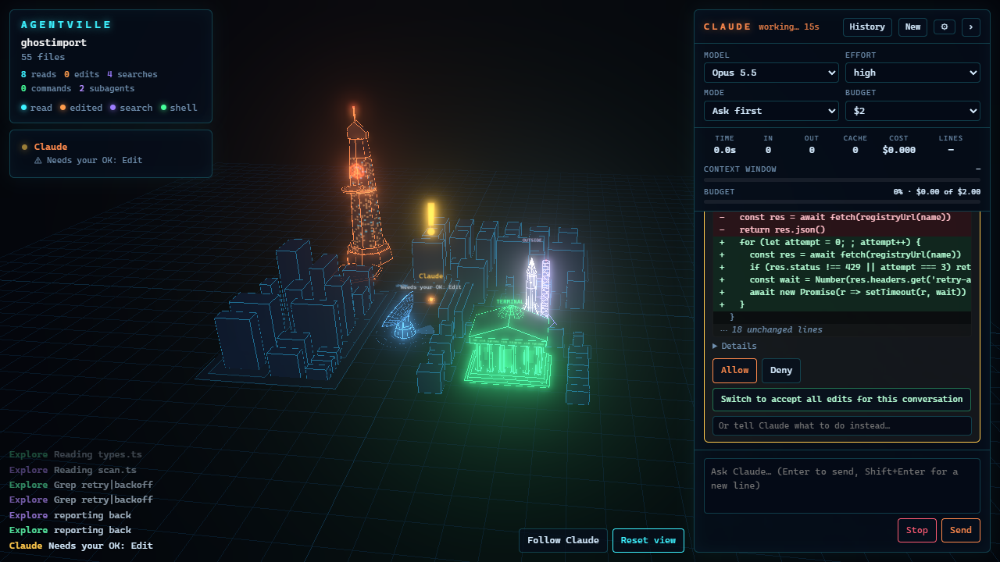
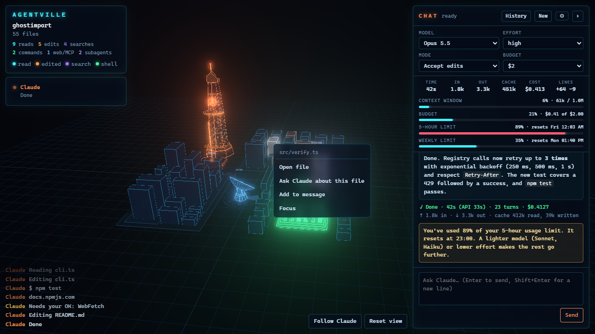

Your repository as a city, with Claude Code walking through it.
Agentville draws every folder as a district and every file as a building. While Claude Code works, you see it walk to the files it reads, mark the ones it edits, and send its subagents off on their own errands.
The city
Every tool call has a place to go.
Claude is the orange orb. Subagents are smaller orbs in their own colors. They walk the streets between the buildings instead of flying over them, so you can follow where each one goes.


Views
A full tab, or a minimap in the Explorer.
Switch from the ⚙ menu or with Agentville: Switch View. Both follow Claude Code wherever it runs: the terminal, the Claude Code extension, or Agentville's own chat.


Chat
Claude Code itself, in a panel beside the city.
It runs your installed claude with your existing login, so there is no API key and nothing new to sign in to.


Each run shows its time, tokens and cost. Bars show the context window and your plan's 5-hour and weekly limits, with a warning before you hit them. You can switch model, effort and permission mode mid-conversation, set a budget, and pick up conversations you started in the terminal.
Privacy
Your code stays on your machine.
A small Claude Code plugin sends events to VS Code over 127.0.0.1, with a token from your home folder. Its hooks run async, so Claude never waits for them. This is the part that decides what an event carries, straight from plugin/scripts/emit.mjs:
// The fields of a hook payload the city uses. Never file contents or tool output. event: payload.hook_event_name, tool: payload.tool_name, file: input.file_path ?? input.notebook_path, pattern: cut(input.pattern, 80), command: cut(input.command, 120), description: cut(input.description, 100), query: cut(input.query, 80), // a web fetch sends only the host, not the URL event.url = new URL(input.url).host // a prompt is cut to its first 80 characters event.prompt = cut(payload.prompt, 80)
Price
Try it for a week, then buy it once.
Only days on which the city sees Claude at work count toward the week, within 30 days of the first. You need Claude Code installed; Agentville uses your existing plan.
Questions
- Do I have to use Agentville's chat?
- No. The city follows Claude Code in the terminal and in the Claude Code extension too.
- Does it increase my Claude usage?
- No. The city only listens to events Claude Code already sends; it never calls the model. The chat is a normal Claude Code session with nothing added to your prompts, so it uses the same as the terminal would. It also helps you spend less: a budget per conversation, a warning before your plan's limits, and Haiku for quick questions.
- Does it slow Claude down?
- No. The plugin's hooks are asynchronous.
- How big a repository can it draw?
- Up to 4,000 files by default, and up to 20,000 in the settings. node_modules, build output and similar folders are left out.
- Which systems?
- Windows, macOS and Linux.
- Is it made by Anthropic?
- No. It is an independent project.